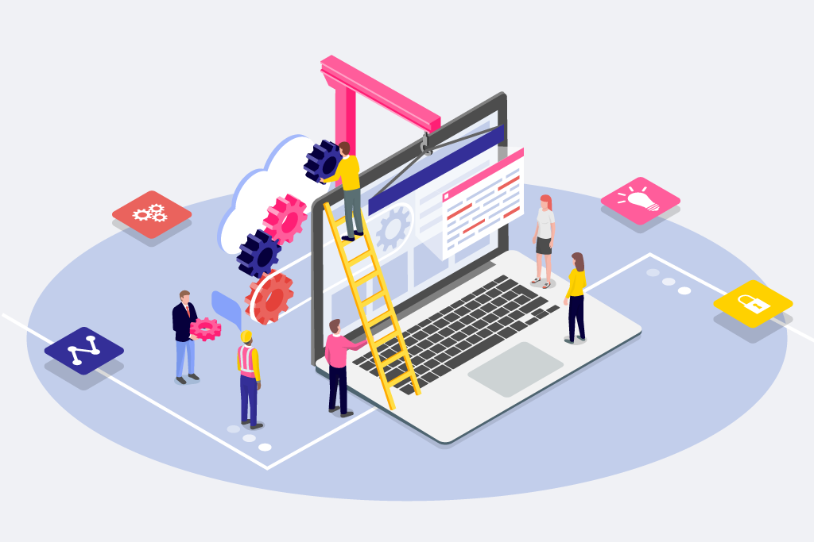

MANA DIGITĀLĀ PIEREDZE MĀCOTIES LATVIJAS UNIVERSITĀTĒ

Šis ir mikrobloga formāta projekts, kurā Latvijas Universitātes studenti dalās ar savu digitālo pieredzi studiju laikā. Mērķis ir palīdzēt nākamajiem studentiem saprast, kā digitālie rīki, platformas un saziņas veidi ietekmē mācību procesu un ikdienu LU. Šeit atradīsi personīgus stāstus, praktiskus padomus un refleksijas par digitālo vidi universitātē.